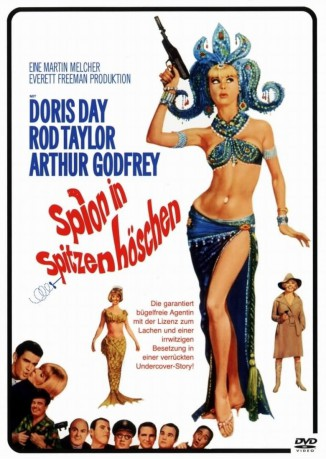

gesehen am 25.07.2017
gesehen am 25.07.2017Alternativ: The Glass Bottom Boat gesehen am 25.07.2017
 
 IMDB-Wertung: 6.5 / 10
IMDB-Wertung: 6.5 / 10  Metascore:
Metascore: 
Witwe Jennifer Nelson ist gleichzeitig als Fremdenführerin für die Abteilung eines Weltraumforschungskonzerns und als Wassernixe für Touristen tätig, die mit dem Glasbodenboot ihres Vaters die Tiefseewelt erkunden. Als Wissenschaftler Bruce Templeton sie beim Angeln zufällig an den Haken kriegt, stellt er sie als Biografin für das nicht existente Projekt Venus ein, um sie schneller verführen zu können. Der CIA hält Jennifer jedoch für eine sowjetische Spionin. Bis sich alles aufklärt, richten Jennifer und der CIA die Labors beinahe zu Grunde.
Jahr: 1966
Dauer: 110 Minuten
FSK: 12
Land: USA Studio: MGMTonspuren: DD2.0 - ,
Untertitel:
Auflösung: 720p (1272x720) Größe: 4352 MB
Regisseur: Frank Tashlin
Drehbuch: Robert Riskin
Soundtrack:
Darsteller:
 Doris Day als Jennifer Nelson
Doris Day als Jennifer Nelson Rod Taylor als Bruce Templeton
Rod Taylor als Bruce Templeton John McGiver als Ralph Goodwin
John McGiver als Ralph Goodwin Edward Andrews als Gen. Wallace Bleecker
Edward Andrews als Gen. Wallace Bleecker Dom DeLuise als Julius Pritter
Dom DeLuise als Julius Pritter George Tobias als Mr. Fenimore
George Tobias als Mr. Fenimore Don Anderson als Party Guest , uncredited
Don Anderson als Party Guest , uncredited John Dennis als Policeman , uncredited
John Dennis als Policeman , uncredited Michael Romanoff als Husband , uncredited
Michael Romanoff als Husband , uncredited Robert Vaughn als Napoleon Solo , uncredited
Robert Vaughn als Napoleon Solo , uncredited Elisabeth Fraser als Nina Bailey
Elisabeth Fraser als Nina Bailey Jeffrey Sayre als Party Guest , uncredited
Jeffrey Sayre als Party Guest , uncreditedDatei: X:\1966\Spion in Spitzenhöschen (1966, FSK12, 1272x720).mkv seit 09.01.2017
Festplatte: HD 1900-1970
 Es gibt insgesamt 27 Filme in der Gruppe '1966'
Es gibt insgesamt 27 Filme in der Gruppe '1966'